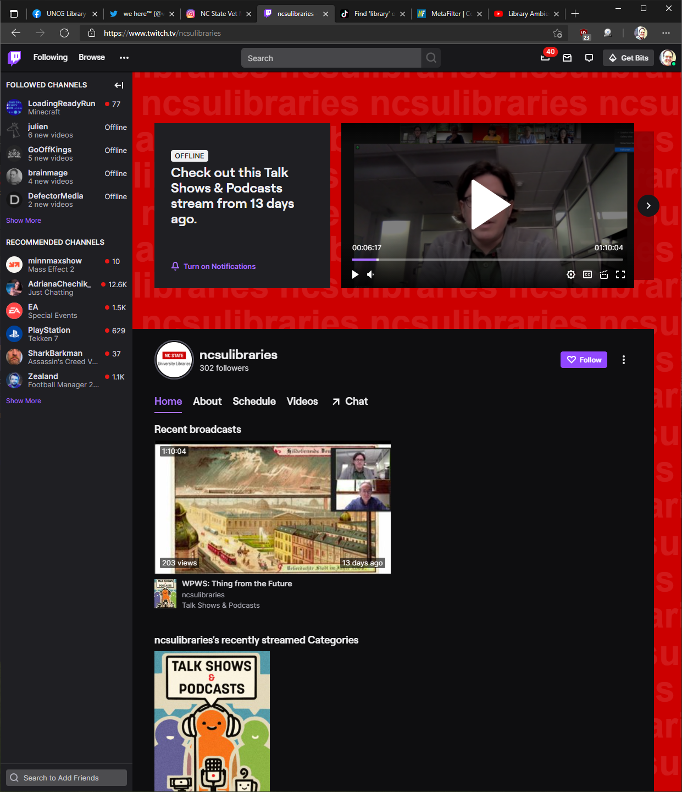

Twitch
Overview
The most prominent livestreaming site on the Internet, Twitch was originally founded as a way for gamers to watch each other play the newest and hottest in the world of video gaming, but - as is often the case with virtual communities - has expanded well beyond that remit. Popular streamers now do crafts, watch sporting events, or just lounge around in a hot tub, chatting.
Strengths & Weaknesses
Like YouTube, the community at Twitch is largely creator-centered fans of a particular streamer may interact with each other in the chat, but it is primarily a one-to-many experience, though there are opportunities for cross-pollination. Streamers can feature less popular creators on their channel when they are not live, and often send their followers to other, particularly interesting streams in a process called “raiding” (though it tends to be much friendlier than it sounds).
Recommendations
Twitch is an excellent opportunity for libraries to connect with the gamers among their patrons. Academic libraries are partnering with video game design programs or clubs within their institution to provide a platform for student programmers to demonstrate their creations, but the platform can also be an easy way for the public to casually drop in and out of a workshop or book club.
What can we learn?
Livestreaming is a key trend in social media, as most major platforms have added some sort of live video functionality to their software. Much like TikTok, it represents a potentially challenging mode of communication for librarians, but it offers an opportunity to reach out to a type of audience that might not otherwise be interested in what a library has to offer.